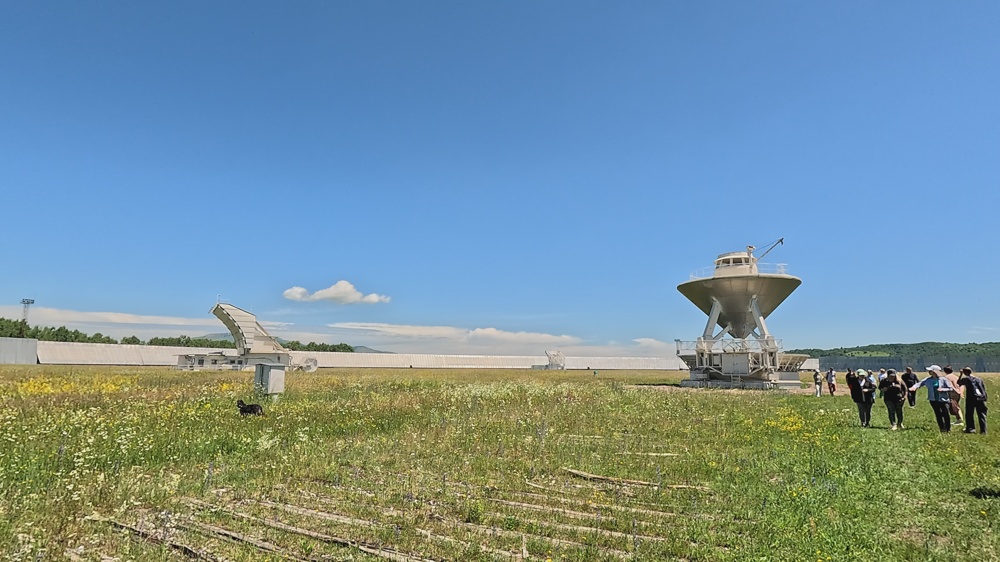

Летнее путешествие по Архызу
|29 июля 2024
Все мы слышали об Архызе как об одном из лучших горнолыжных курортов страны - и это определённо так. Но немногие знают, что в Архызе можно увидеть очень много интересного и летом: здесь огромное количество пеших маршрутов для любой физической подготовки и развалин древних аланских городищ и храмов. А ещё тут находиться самая большая астрофизическая обсерватория в Евразии.
Обо всём этом читайте в новой статье.
Содержание
Маршрут до скалы Карча-Тёбе
Телескоп БТА
Маршрут до водопада Чигордали
Маршрут до пика Пастухова
Канатная дорога в посёлке Романтик
"Тропа Романтиков"
Маршрут к озёрам балки Орлёнок
Маршрут к озеру Семицветное
Телескоп РАТАН-600
Видео
Маршрут до скалы Карча-Тёбе
Это самый простой маршрут, чтобы насладиться природой и надышаться воздухом хвойного леса. Он не требует особой физической подготовки и отлично подойдёт для акклиматизации, чтобы подготовиться к более сложным маршрутам.
Путь довольно короткий, но на протяжении всего пути будет ощущаться крутой подъём.

Примерно через час пути вы окажетесь на скале, откуда открывается панорамный вид на Архыз и гору Красную.

Телескоп БТА
Карачаево-Черкесию называют "астрономической республикой": особые природно-климатические условия, большое количество ясных ночей, отсутсвие засветки атмосферы делают республику идеальной локацией для наблюдения за звёздным небом.
Примерно в 40 минутах езды от Архыза, на горе Семиродники на высоте 2100 метров расположена верхняя научная площадка САО РАН. Именно здесь расположен самый большой в Евразии, а до 1993 года самый крупный в мире, оптический телескоп БТА. Диаметр его зеркала 6 метров, полная масса - 850 тонн, а высота купола башни - 53 метра.
На БТА можно наблюдать далёкие звёзды и галактики, находящиеся на расстоянии от 6 до 8 млрд световых лет, тогда как до его создания было возможно исследование космических объектов только на расстоянии до 5 млрд световых лет.
На телескопе проводят экскурсии, где рассказывают об истории его создания, конструкции и исследованиях, которые были на нём проведены.
А ещё с горы, на которой расположен телескоп открывается отличный вид на величественные горы вокруг.
Маршрут до водопада Чигордали
Водопад Чигордали находится на территории Архызского участка Тебердинского заповедника. Это уникальная природная зона в районе Кизгычского лесничества.

Природа здесь разнообразна: горная местность, сосновые и пихтовые леса, ледники, альпийские луга с озёрами.
Маршрут достаточно прост и подходит для физической подготовки любого уровня. Длиной он около 8 километров в одну сторону. Трансфер до старта не потребуется: путь начинается практически из центра посёлка Архыз.

Река Кизгыч, в долине которой проходит весь путь до водопада, совсем не похожа на горную — гладь широкая и спокойная, а цвет очень отличается от других рек Архыза.

Единственный трудный подъём будет в конце пути, когда тропа поворачивает налево в красивый пихтовый лес. По нему нужно идти около 30 минут, и вы выйдете к скальной чаше, с которой срывается вниз водопад Чигордали.

А ещё, если повезёт, на пути к водопаду можно встретить зубра. Этот вид реакклиматизтрован на территории заповедника, так как находиться под угрозой исчезновения. В настоящий момент их в заповеднике насчитывается уже более 40.

Маршрут до пика Пастухова
Маршрут до пика Пастухова очень малопосещаем, и начинается от горы Семиродники. Это значит, что прогулку можно совместить с посещением телескопа БТА.
Общая протяжённость маршрута в обе стороны примерно 14 километров, у нас это заняло 5,5 часов. Маршрут довольно сложный из-за крутого продолжительного подъёма во второй половине пути, и мы сильно измотались.

Высота горы Пастухова - 2733 метра.
Нам не повезло, в этот день была сильная облачность. А в ясную погоду отсюда открывается потрясающий панорамный вид на ущелья реки Большой Зеленчук и реки Маруха.
Если вы идёте в июне или в июле, то на протяжении всего пути будете любоваться прекрасными альпийскими лугами: здесь целые заросли рододендронов и других интересных и красивых цветов.
Канатная дорога в посёлке Романтик
В 10 минутах езды от Архыза расположен посёлок Романтик - именно здесь расположены горнолыжные трассы и все канатные дороги.
Зона катания здесь расположена на двух склонах - Северном и Южном.
Канатная дорога Северное сияние на Северном склоне состоит из двух ступеней. Первая выполняет функции подвесного моста через реку Архыз. Вторая поднимает на высоту 2339 м, откуда начинается маршрут на пик Смирнова 2519 м с панорамным видом на самую высокую вершину Архыза - Пшиш 3780 м.
Здесь же можно пересесть на канатную дорогу Союз, которая довезет до смотровой площадки на хребте Габулу на высоте 2505 м, откуда впервые в летнем сезоне вы увидите хребет Абишира-Ахуба с высоты птичьего полета.
Отсюда можно отправиться на маршрут до пика Смирнова или просто погулять в окрестностях канатной дороги.
На южном склоне работает канатная дорога Млечный путь, которая поднимает гостей на смотровую площадку Южного склона на высоту 2240 метров.
Отсюда можно отправиться по экотропе Романтиков, Аланскому пути или к перевалу Федосеева, откуда открывается вид на цепочку озёр хребта Абишира-Ахуба.
"Тропа Романтиков"
Экомаршрут "Тропа Романтиков" начинается от верхней станции КД «Млечный путь» на высоте 2250 м над уровнем моря на южном склоне хребта Абишира-Ахуба. Отсюда видны самые высокие пики района: Пшиш (3780 м) и София (3637 м).

Тропа петляет по хвойному лесу через поляны субальпийского разнотравья, порой выводя на эффектные видовые площадки, проходит через лиственный лес, заросли малинника и точки отдыха с чистейшей водой из горных ручьев. Весной здесь еще лежит снег, а летом зеленые горы вокруг кажутся плюшевыми и пестрят цветами.

Длина тропы всего 4,2 километра, перепад высоты 590 метров, время прохождения не более 2 часов. На протяжении всего пути находится множество информационных стендов, поэтому прогулку можно совместить с получением интересной информации о природе и истории Архыза.

Ещё на тропе расположено множество мест для отдыха, можно посидеть и перекусить. Заканчивается маршрут около нижней станции КД «Спутник» на высоте 1650 м.

Маршрут к озёрам балки Орлёнок
Это уютный однодневный маршрут, и по некоторым источникам, он один из самых красивых в Архызе. Рассчитывать нужно на среднюю физическую подготовку - маршрут довольно протяжённый (примерно 14 километров), перепад высот 790 метров.
Маршрут начинается с поляны Таулу - популярного туристического места. Здесь находиться множество отелей, мест проката квадроциклов, джипов и др.

Сначала идёт довольно крутой подъём по лесу, затем тропа выходит к открытой долине и большому водопаду. Здесь начинается трудный и небезопасный подъём по мелким камням, и при неосторожном движении можно покатиться вниз.
После подъёма открывается сама балка Орлёнок и прекрасный вид на массив Караджаш и долину, по которой проходил путь.
Через 5 минут пути вы выйдете к озеру Секретному, которое находиться на высоте 2250 метров. Озеро абсолютно прозрачное, и в нём отражается величественный скальный массив Караджаш.
Здесь можно насладиться красотой озера, отдохнуть и перекусить. Ещё можно пройти к следующему озеру, которое находиться буквально в 5 минутах ходьбы.

Маршрут к озеру Семицветное
Это захватывающий однодневный маршрут, в каждое время года привлевательный по-своему: в июне цветут рододендроны, а в сентябре и октябре деревья окрашены ярчайшей палитрой красок. Пейзажи вокруг плавно меняются на протяжении всего маршрута.
Для того чтобы попасть на маршрут, нужно взять заброску на джипе из Архыза и доехать до конца дороги.
Маршрут довольно протяжённый (16 - 18 километров), путь займёт примерно 6 - 8 часов.
Сразу после конца дороги начинается тропа, идущая вдоль реки Большая Дукка. Дукка - самая чистая река в Архызе: какие бы дожди ни шли, её воды всегда остаются прозрачными.

Подъём по долине почти всё время лёгкий и плавный, набор высоты почти не ощущается. На пут встречаются курумники с огромными валунами - здесь нужно быть особенно осторожными. Последние несколько сотен метров начинается крутой подъём к озеру. Мы были на маршруте в конце июня, и пришлось подниматься по скользкому, поэтому наличие треккинговой обуви обязательно!
После подъёма вы сразу же выйдете к берегам озера Семицветного.
Берег озера почти сплошь каменистый, но серость камня ещё более подчеркивает яркий цвет и переливчатую поверхность воды, благодаря чему озеро и получило название Семицветное. Оттенок воды может быть разным в зависимости от погоды и времени года, но всегда остаётся насыщенным. Эффектнее всего озеро выглядит в солнечную погоду.
На берегу озера можно устроить привал, пообедать и сделать красивое фото.

А если посмотреть назад, то с высоты можно увидеть очень красивую долину реки Большая Дукка, по которой проходил путь.

Телескоп РАТАН-600
РАТАН-600 - это самый большой радиотелескоп на планете. Он ведёт наблюдения круглосуточно. Телескоп представляет собой огромный рефлектор с кольцевой антенной переменного профиля диаметром 600 метров. Это самая большая антенна на планете, состоящая из 895 подвижных элементов.
Телескоп располагается на высоте 970 метров над уровнем моря и примерно в часе езды от центра посёлка Архыз. Его предназначение - приём радиоизлучений всех космических объектов от галактических до внегалактических
С помощью РАТАН-600 исследуют как близкие объекты (Солнце, солнечный ветер, планеты и их спутники), так и крайне удалённые (радиогалактики, квазары, космический микроволновый фон).
Видео
Посмотреть видео о летнем путешествии в Архыз и подробнее узнать обо всех местах, описанных в статье, можно здесь
Спасибо, что были с нами!
Посмотрите все статьи нашего сайта про интересные места со всего мира